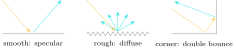

, dielectric constant i.e. moisture, geometry and orientation): smooth surfaces mirror energy away and look dark, rough ones and corners look bright.
, dielectric constant i.e. moisture, geometry and orientation): smooth surfaces mirror energy away and look dark, rough ones and corners look bright.Definition
, dimensionless, expressed as dB (typically −25 to +5 dB).
System parameters:
- wavelength: longer waves penetrate deeper into vegetation and dry soil (X: canopy top; C: canopy; L and P: branches, trunks, ground);
- polarization: transmit and receive horizontally (H) or vertically (V): HH, VV co-polarized; HV, VH cross-polarized, sensitive to volume scattering (vegetation);
- incidence angle :
 decreases with , fast for smooth surfaces.
decreases with , fast for smooth surfaces.
Surface parameters:
- roughness: smooth if height variations (Rayleigh criterion), giving specular reflection away from the sensor (calm water: black);
- dielectric constant: water raises it, so wet soil and vegetation backscatter more;
- geometry: slopes facing the radar are bright, dihedral corners (building–ground) give strong double-bounce returns.
Picture

Worked example
values are compared in dB: a field at −8 dB and a lake at −22 dB differ by 14 dB, a factor in power. Averaging must be done in linear units: the mean of −10 dB and −20 dB is dB, not −15 dB. Rayleigh criterion in C band ( cm) at : smooth if cm — a ploughed field (several cm) is rough, a calm lake smooth.
Intuition
A radar image is a map of roughness, wetness and geometry seen from the side, not a map of colour.
Pitfall
The same can come from different causes (a wet smooth field and a dry rough one): interpretation needs several bands, polarizations, angles or dates.